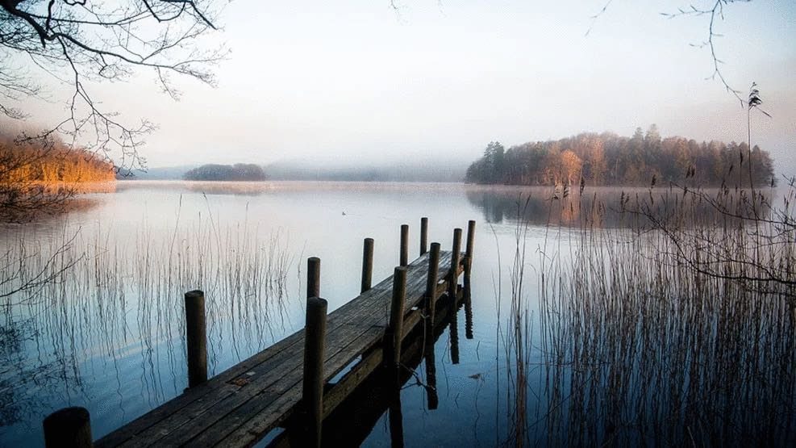

Ønsker du at komme godt igang?
Som nybegynder indenfor fiskeri er der mange ting der er vigtige at kende til, inden du kaster linen for første gang. Vi har derfor lavet den perfekte guide til de gode spots i Midtjylland.
Borre sø
Gode søer i midtjylland
Søhøjlandet, især Skanderborg Sø og Borre Sø ved Silkeborg, er ideelle fiskesteder
i naturskønne omgivelser.
De omkringliggende skove og bakker skaber ro og harmoni,
perfekt til en afslappende dag ved vandet. Fiskeri ved disse søer tilbyder forskellige muligheder,
herunder fiskeri fra bredden blandt træerne eller udforskning af dybere vandlag med en båd.
Begge søer har en bred vifte af fiskearter, herunder:
- Gedder
- Aborrer
- Sandart
- Skaller
Uanset præferencer er der gode chancer for at fange drømmefisken.
Skriv en kommentar her...